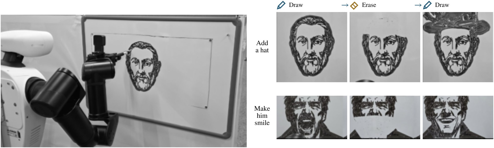
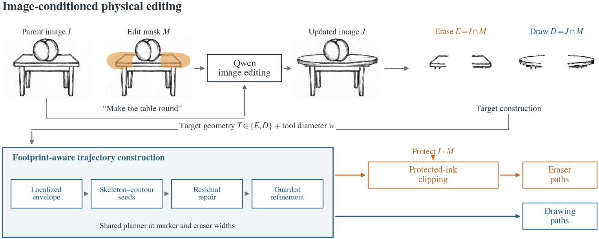
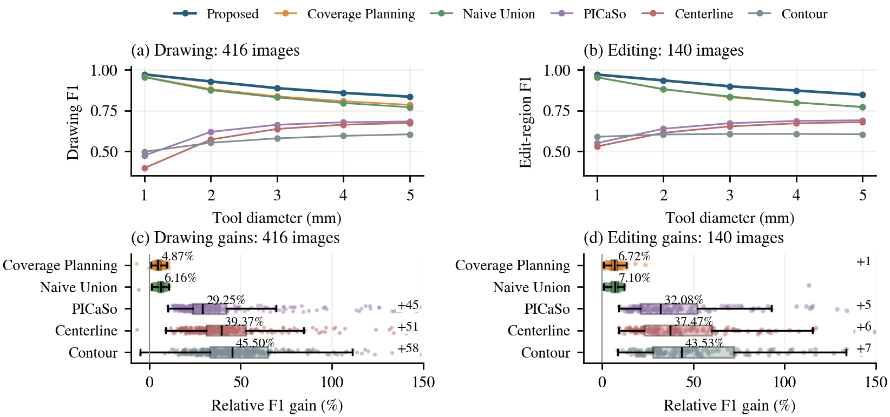
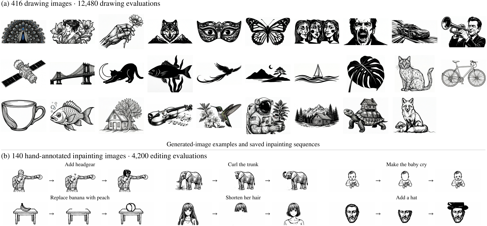

Footprint-Aware Planning
for Robotic Drawing and Physical Inpainting
Under double-anonymous review
Footprint-aware planning for drawing, selective erasure, and local redraw.

Abstract
We present a unified footprint-aware planner for robotic drawing and physical inpainting. It maps binary artwork and tool dimensions to trajectories for outlines, bold strokes, and filled regions. Localized spill allocation makes fine structures reachable; residual repair and guarded refinement reconstruct the resulting envelope and shorten routes while preserving sampled contact. The same construction supports marker drawing and protected erasing. Across 12,480 drawing evaluations spanning 416 images, six methods, and five tool widths, our planner achieves mean F1 of 0.8967, improving on Coverage Planning by 4.27 percentage points. Mean per-image coverage is 99.39%, with 23.9% lower unwanted-to-target area ratio. Across 4,200 erase–redraw evaluations, edit-region F1 improves by 5.69 points and mean per-image obsolete-ink removal reaches 94.01%. Seventy physical actions demonstrate paired 1 mm and 2 mm drawings of 18 targets and 14 local erase–redraw edits across six artworks.
Method Overview
A localized spill envelope makes fine structures reachable. Skeleton–contour seeds establish initial paths, residual repair fills missed regions, and guarded refinement simplifies routes while preserving sampled contact. For image edits, the parent image, edit mask, and updated image define what to erase, draw, and protect.

Quantitative Results
The benchmark spans 12,480 drawing evaluations and 4,200 erase–redraw evaluations. Our planner improves mean drawing and edit-region F1 over Coverage Planning across the evaluated widths.
| Method | F1 | Coverage | UT | Pen-down (m) | Pen-up (m) | Touchdowns |
|---|---|---|---|---|---|---|
| Proposed | 0.8967 | 0.9939 | 0.2536 | 45.88 | 1.76 | 136.41 |
| Coverage Planning | 0.8541 | 0.9735 | 0.3334 | 27.34 | 38.94 | 4677.89 |
| Naive Union | 0.8459 | 0.9951 | 0.3997 | 38.86 | 196.01 | 6793.23 |
| PICaSo | 0.6233 | 0.6340 | 0.3098 | 28.72 | 14.08 | 309.68 |
| Centerline | 0.5884 | 0.5706 | 0.2626 | 11.52 | 156.72 | 2115.34 |
| Contour | 0.5653 | 0.6154 | 0.4704 | 26.66 | 110.78 | 1095.48 |
UT is unwanted contact area divided by target area. Motion distances are geometric path lengths.
| Method | Removal (%) ↑ | Damage (mm²) ↓ | Edit-region F1 ↑ | Whole-canvas F1 ↑ | Exterior ink mean (mm²) ↓ | Exterior ink 95th (mm²) ↓ | Erasing distance (m) |
|---|---|---|---|---|---|---|---|
| Proposed | 94.01 | 1.599 | 0.9053 | 0.9133 | 5.195 | 20.563 | 5.59 |
| Coverage Planning | 89.17 | 1.163 | 0.8484 | 0.8959 | 27.924 | 97.495 | 3.41 |
| Naive Union | 93.76 | 1.741 | 0.8486 | 0.8958 | 31.224 | 102.830 | 4.79 |
| PICaSo | 60.79 | 1.395 | 0.6474 | 0.8356 | 12.132 | 48.438 | 3.06 |
| Centerline | 55.42 | 1.295 | 0.6292 | 0.8304 | 8.959 | 38.312 | 1.38 |
| Contour | 72.78 | 1.946 | 0.6017 | 0.8177 | 43.398 | 116.064 | 3.19 |
On small screens, scroll horizontally to see every metric.

Dataset and Reproducibility

A minimal Python package provides drawing, local editing, five baselines, table reproduction, and saved-path rescoring. The dataset is split into five archives so reproducing the tables requires just 4.67 MiB.
The dataset contains 416 drawing images and 140 evaluated image-edit examples with hand-annotated masks, together with saved trajectories and benchmark metrics. Standalone CPU runners support prepared-image inputs and produce millimeter trajectories and previews.
Download anonymous review code (ZIP). Includes CPU runners, synthetic examples, and tests. Dataset access is being prepared separately.
Dataset bundles 2.10 GiB total
| Bundle | Contents | Size |
|---|---|---|
| Results | Saved metrics and metadata | 4.67 MiB |
| Drawing inputs | Images and masks | 229.51 MiB |
| Editing inputs | Parent images, masks, and updates | 105.22 MiB |
| Drawing trajectories | 12,480 saved paths | 909.06 MiB |
| Editing trajectories | 4,200 saved results | 903.01 MiB |
Table reproduction aggregates saved benchmark metrics. Saved-path rescoring evaluates geometry again; drawing and editing runners generate new trajectories.